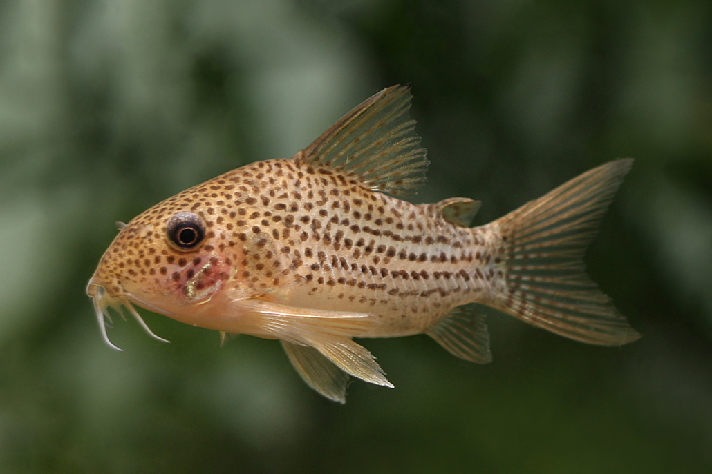

바닥을 청소하는 귀여운 습성으로 인기 있는 평화로운 갑옷 메기입니다.
작고 평화로운 성격의 갑옷 메기(Armored Catfish)입니다. 바닥에서 수염(바벨)을 이용해 먹이를 찾는 습성이 있습니다. 군영(떼 지어 다니는 습성)을 하므로 5마리 이상 함께 키우는 것이 좋습니다.
바닥에서 먹이를 먹는 저서성 어종이므로 침강성(가라앉는) 펠렛이나 전용 사료를 급여해야 합니다. 가끔 냉동 장구벌레나 브라인 슈림프를 보충해 줄 수 있습니다.
3년 ~ 5년 (종에 따라 10년 이상)
쉬움. 환경 적응력이 높고 튼튼해서 초보자에게 적합하지만, 바닥재가 더러우면 수염(바벨)을 다칠 수 있으므로 저면 청소에 신경 써야 합니다.
수온 22~26℃를 선호합니다. 수염 보호를 위해 부드러운 모래나 미세한 입자의 바닥재를 사용해야 합니다. 수초나 유목 등 숨을 공간을 제공하면 안정감을 느낍니다.

수염과 짧은 지느러미가 귀여운 바닥 청소부입니다.